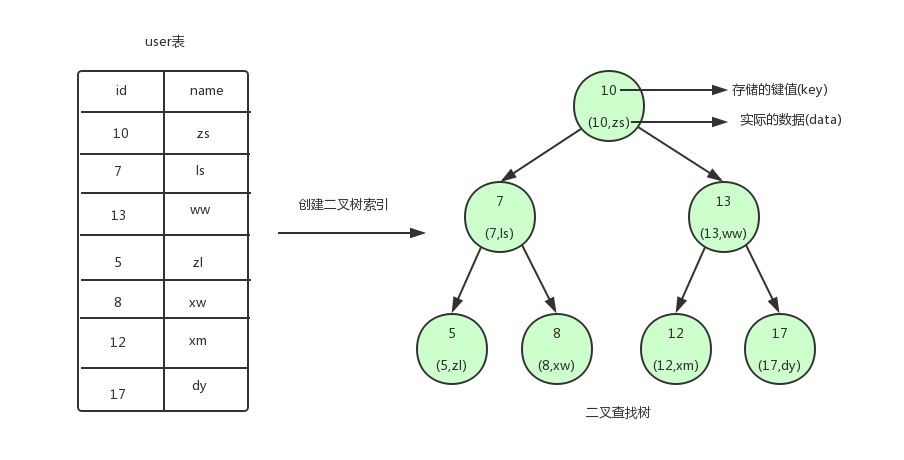
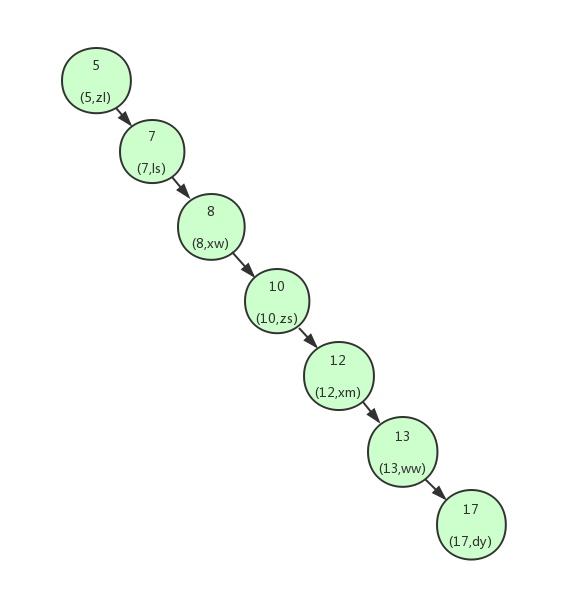
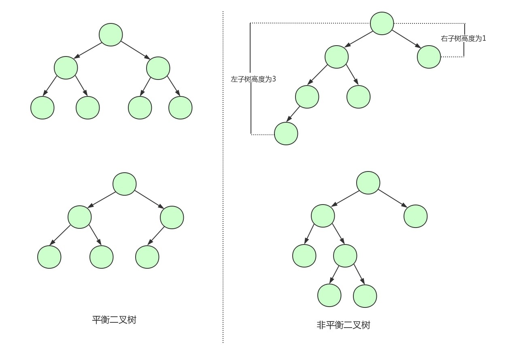
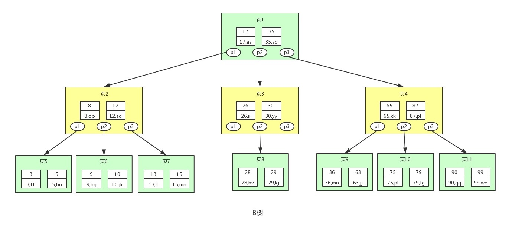
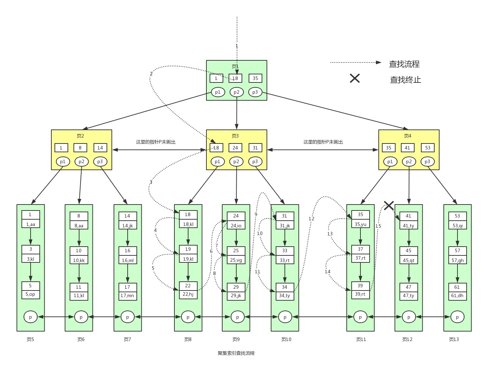

索引
要搞明白的几个问题：
- 为何索引叫key.
primary key、unique、foreign key...
- 索引是如何加速查询的,它的原理是啥？
索引模型/结构 从二叉树--平衡二叉树--b树--b+数 每种树到底有什么问题最终演变成了b+树
为何b+数不仅能够加速等值查询还能加速范围查询(等同于多次等值查询)
什么是聚集(聚簇)索引？什么是辅助(非聚集｜非聚簇｜二级)索引?
什么情况下叫覆盖了索引.
什么情况下叫回表操作.
什么是联合索引 最左前缀匹配原则.
什么是索引下推,查询优化.
如何正确使用索引？
1.什么是索引？
mysql的数据组织方式,B+树组织结构.. innodb不支持hash
2.为什么用索引？
加速查询 会降低写入速度 建完后硬盘空间会变大
3.如何做到加速的呢？(B+树是怎样的一种数据结构？)
回答思路:
B+树是由 二叉树、平衡二叉树、B树一路演变而来的
不管以什么树构建索引,都分为两步 若以id字段构建索引 key-id value-本行记录;比较key值大小 构建树形结构
若树型结构是二叉树 二叉树的两个特点？二叉树致命的缺点,可能是一根棍,右斜棍,树高度高-IO次数就高.
平衡二叉树可以解决这一致命缺点 AVL树的特点？AVL树的缺点.. 每个节点|页|磁盘块放的只有一行内容.. 若有百万行数据,哪怕是最理想的AVL树 2^0 2^1 ... 2^20 百万级别的数据,IO次数也得20次 一次磁盘IO的影响？
B树 每个节点放多个key-value. 打个比方,两组值的key的18,31.就有三个指针,一个指向比18小的,一个指向18到31中间的,一个指向比31大的. 在等量数据下,B树的高度是远远小于AVL树的. B树前几次IO不必要的value数据..
B+树四大特点:
非叶子节点只放key值,叶子节点放key-value (相较于B树 非叶子节点固定16k的大小 可放的key值更多..指针也更多 树变矮变胖)
叶子节点彼此之间有双向链表的指向(范围查询变快 why?相当于多次等值查询 从根节点一路找到某一叶子节点后... B树得每次回头从根节点开始找)说不明白就举例子 where id > 3, 先找到id=4所在的叶子节点...
叶子里面的key值是单向链表,叶子节点之间是双向链表 全都排好序了 导致排序也很快.
高度为3的B+树能放千万级别的数据...演算过程..
4.B+树索引的分类
聚集索引与辅助索引的区别 id name字段举例说明
5.覆盖了索引与回表操作 两者都是在命中了索引的前提下
6.innodb引擎为啥叫索引组织表？一张表只能有一个主键 以主键来组织数据 若没有主键...
7.如何正确使用索引？
1) 索引原则:不为空且唯一占用空间小
2) 给重复度高or占空间大的字段建立索引 等值查询速度提升不理想
3）全表最好 分页给
4）范围查询范围别太大 太大了就相当于等值查询了
5）别让字段参与运算,也别用啥函数 保持字段干净
6）其它...
8.索引下推、联合索引、最左前缀匹配？
索引下推 and-找里面最优的那个字段缩小范围 对or没法
最左前缀匹配 就是一定要有最左边那个
9.未命中索引的情况
第1-3问题的解答如下:¶
一. 什么是索引?¶
key - 数据结构 - 索引组织数据 - B+树
简单理解 相当于书籍的目录.
索引是mysql的一种数据结构,这种数据结构称之为key,大白话说索引就是一种数据的组织方式.
表中的一行行数据按照索引规定的结构组织成了一种树型结构,该树叫B+树.
二. 为何要用索引?¶
以空间换时间
优化查询速度.(读写比例10:1)
三. 如何正确的看待索引呢?¶
why卡？排查到索引上成本高.开发之初就应该加.
索引越多 ibd文件里的索引树越多 一个update语句导致很多树发生变化 IO效率down！
错误的认知
- 软件上线之后,运行了一段时间,发现软件极卡(用户请求一个数据半天出不来),想到要加索引 （x）
慢：不是指绝对意义上的很长时间。即便某一条sql语句卡顿2-3秒也会严重影响用户体验.
慢的原因：网速、程序本身、数据库....
在开发软件之初就应该根据业务的理解加索引(定位到常用的查询字段).
火烧眉毛再加索引,光问题定位排查到数据库上就需要耗费很长时间,成本很高！
- 索引越多越好. (x)
加索引查询 (读) 会变快,但增删改数据 (写) 的速度会变慢,因为多了一层B+树的数据结构的维护(每次操作都
要调整整个B+树的数据结构关系)
如果某张表的ibd文件(ibd -- 数据和索引结构的文件)中创建了很多棵索引树,意味着很小的update语句会导致很多棵索引树都需要发生变化,从而硬盘的IO会很高,吃不消.
四. 储备知识¶
1> 索引的根本原理¶
原理: 将磁盘(硬盘)的IO次数降下来.提速.
[ 类比 ]: 书( 一张表); 书的一页( 表的一行); 索引( 书的目录)
所以 准确来说 是为一张表的一行行记录创建索引！(为书的一页页内容创建目录)
有了目录结构(索引)后,我们以后的查询都应该通过目录(索引)去查询！
题外话: 像什么集群架构的优化到最后都是优化IO.
硬盘内存都有IO 内存IO很快不考虑, 主要是 硬盘IO和网络IO.
因为内存的易失性(断电数据丢失) 一般情况下,我们都会选择将表中的数据和索引存储在磁盘这种外围设备中
但是和内存相比,从磁盘中读取数据的速度会慢上百倍千倍甚至万倍,所以,应当尽量减少从磁盘中读取数据的次数。
2> 一次磁盘IO的影响¶
硬盘传数据到内存通过主办上的总介传输 光速！7200转/min的硬盘为例...
硬盘主要看找数据的时间 = avg寻道时间 + avg旋转时间 + 读写数据时间 ≈ 9ms
磁臂找到磁道 - 数据在磁道某一个位置 - 读取磁盘块(多个弧段)9ms? 时间长吗？一个普通的cpu可以在这段时间运行450万条命令.
况且一个表中的记录成千上万, 若是 一行行的找... 每行9ms ,boom原地爆炸.
固态硬盘贵. 机械硬盘 (转速越高读写越快 读写数据靠的机械运动)
以7200转/分钟(120转/秒)的机械硬盘为例, 做磁盘IO将硬盘的数据读到内存.
cpu下发指令到硬盘,硬盘找到数据后往内存里读, 从硬盘把数据往内存读其实就是本地在主板上通过总介传输,这个速度很快几乎光速. 我们说硬盘慢是慢在找数据这一过程.(这里说的是本地 不涉及网络哈！)
一次磁盘IO的延迟时间'即找数据的时间' = 平均寻道时间+ 平均旋转时间+传输时间 = 9ms
平均寻道时间: 磁臂从外到内的要划到数据所在的那个磁道上 '大概需要5ms'
平均旋转时间: 数据在磁道那一圈的某个位置 转一圈 1/120s = 1000/120ms = 8.3ms '半圈 4ms'
传输时间: 指的是从磁盘读出或将数据写入磁盘的时间.一般在零点几毫秒.相对于前两个时间可以忽略不计.
9ms很长很长了,一个普通的cpu在9ms的时间里可以执行450万条指令.cpu可不乐意等这么久.
3> 磁盘预读¶
硬盘读写基本单位 - '扇区'(磁道弧段) 512B 字节
扩展:
一个文件系统存储最小单元是块 4k (哪怕文件只有1k大小也要占4k的空间)
innodb存储引擎的最小单元是页Page 16k .ibd是16的整数倍n*扇区 = 磁盘块 硬盘一次IO就是读取一个磁盘块的大小到内存
那磁盘块多大呢？对于innodb引擎的数据库来说,磁盘块最大为16K！简单理解：数据库的一次IO最好能读取16k的数据...
Mysql一次IO大小 ｜ 硬盘一次IO大小 == 一个磁盘块大小 ｜ Mysql一页数据大小 ｜索引树节点的大小
扇区是指磁盘上划分的区域, 磁盘上的每个磁道被等分为若干个弧段, 这些弧段便是磁盘的扇区;
硬盘的读写以扇区为基本单位. 即扇区是磁盘存储信息的最小物理单位, 通常一个扇区的容量为512B;
多个扇区组合到一起称作为一个磁盘块. 磁盘一次IO是读取一个磁盘块到内存里面.
一个磁盘块在数据库里称之为一页. innodb存储引擎一页16k. 即一次磁盘IO读16k数据到内存中.
预读：当一次IO时,把当前磁盘块和相邻的磁盘块都读取到内存缓冲区内. 因为局部预读性原理告诉我们,当计算机访问一个地址的数据的时候,与其相邻的数据大概路会很快被访问到。
题外话：理想情况肯定是挨着存的.... 这里不深纠..
A文件占3个磁盘块、B文件占4个磁盘块, C文件占3个磁盘块,依次挨着存到磁盘里很快,某一天删除了B文件,4个磁盘块就空出来了. 这时D文件来了,它需要5个磁盘块,先存满这4个磁盘块,跨过C文件再找一个磁盘块存,所以一个文件不一定是连续存的.导致磁盘的写效率就低了.
五. 索引的分类¶
B+树与Hash
等值查询：Hash明显有绝对的优势,只需要通过一次Hash算法就可以找到key对应的value(前提Key是唯一的.)
范围查询：Hash索引是无序的,哪怕原本的键值是有序的 也会被打散. 所以Hash不支持范围查询.
B+树！！！*****¶
等值查询和范围查询都快
Hash *** ¶
innodb不支持
等值查询快 不支持范围查询、组合查询、排序、分组...
适用场景: 离散型高 数据基数大 等值查询
FULL-TEXT:全文索引¶
通过关键字的匹配来进行查询,类似于like的模糊查询
like+%_ 在文本比较少的时比较合适,对于大量的文本数据检索会非常慢
全文索引在大量的数据面前能比like快很多,但是准确率很低
百度在搜索文章的时候使用的就是全文索引,也有可能是ES
全文检索通俗点就是word文档里ctrl+f查找,针对的是一篇内容很多的文档.
提一嘴:
默认的innodb引擎不支持我们自己去创建Hash索引,但它自己内部用到了Hash索引便于找到内存里缓存的数据。
六. 创建索引的两个步骤¶
create index 索引名 on 表名(列名);
step1: 提取索引字段每行的值当作key, value就是对应行的记录
10 --- 10 zs 7 --- 7 ls 13 --- 13 ww 索引字段值作为键,对应的一行记录(数据)作为值
step2: 以key值为基础比较大小,生成树型结构
七. B+树?¶
若没有索引,等值查找某个数据,会将表中的记录挨个查询,时间复杂度为O(n).
有了索引后,索引按照 二叉树 -- 平衡二叉树 -- B树'多分支AVL树' -- B+树 的数据结构逐步优化对数据的构建.将数据(1条或多条记录)放到树的节点里,每读一个节点就是一次IO.
节点的大小
二叉树和平衡二叉树树的节点的基本单位一般情况下是扇区(因为一条记录所占空间不够大) ？
B树和B+树的节点的基本单位是磁盘块(理想情况下的大小是16K)二叉树的结构可能就是单纯的一根斜着的棍,树的高度不够低...所以有了平衡二叉树,压低了高度.但这高度实则上也不够低,因为平衡二叉树的每个节点中只放一条记录...在海量数据面前,为了让树的高度更低,就有了B树,每个节点存放多个key-value...但B树除最后一次IO节点,其它IO节点的value并没有用到. 所以B+树非叶子节点放索引结果, 叶子节点放key-value...
B+数的查找有点二分法查找(排好序后..)的意思.
说明: 在下方的一系列阐述中 将树的高度跟层数两个概念混为了一谈,但对整体的理解没多大的影响. (懒得改了..Hhhh)
二叉查找树¶
树的节点分为两类三种:
leaf node: 叶子节点
non-leaf node: 根节点、树枝节点
顶端的节点我们称为根节点, 没有子节点的节点我们称之为叶子节点, 位于中间的都称之为树枝.

从图中可以看到,我们为user表(用户信息表)建立了一个二叉查找树的索引
二叉查找树特点:
每个节点最多有两个子节点
任何节点的左子节点的键值都小于当前节点的键值,右子节点的键值都大于当前节点的键值
(不纠结根节点为啥就是10 '它就是多种构建方案的其中一种结果' 重点在于只要这棵树满足二叉查询树的特点就行！！)
图中的圆为二叉查找树的节点,节点中存储了键(key)和数据(data)
键对应user表中的id,数据对应user表中的行数据。
Q: 有了这个二叉树,查询效率就提高了？
A：错！一定要命中索引才行！命中索引 -- sql语句中查询条件的id对应上了某棵树的key值
select * from where id = 12; 利用二叉索引树的查找过程如下:
<1> 根结点作为当前节点,把12与当前节点的键值10比较,12>10,就将当前节点的右子节点作为当前节点.
<2> 继续把12和当前节点的键值13比较，发现12<13，把当前节点的左子节点作为当前节点.
<3> 把12和当前节点的键值12对比,12=12,满足条件,从当前节点中取出data,即id=12,name=xm.
最多三次就能确定结果了,跟这颗树的高度相同！若没有树,一条条的找,最多需要7次！
二叉树的高度就是所需要查找的数据的最大IO次数
但二叉查询树 非常容易变成像下图 这样构建. 变成了一张链表. 若需要查找id=17的用户信息,就需要查找7次,也就相当于全表扫描了, 时间复杂度变成了O(n) 无法随机查找, 根本无法达到减少IO次数的目的.
高度太高导致查询效率不稳定(上方的那颗树实则是二叉树的特殊情况 平衡二叉树)

平衡二叉树（AVL树）¶
为了解决上述问题,就需要用到平衡二叉树了。 平衡二叉树的特点: 在满足二叉查找树特性的基础上，要求每个节点的左右子树的高度差不能超过1!

Q: 用平衡二叉树就没问题了吗？
A: No！我们创建索引的时候将索引的键值对写入硬盘, 然后mysql每次IO读取一个节点的数据到内存. 哇！诚然, 平衡二叉树相较于逐行一条条的查找可以提速. 但innodb引擎的一页数据可是可以达到16k的. 一次IO就读一条记录(几个字节)也太浪费了吧！IO次数可是取决于树的高度的！
这就好比于开卡车运货,为什么每辆卡车只放一个很小的货物呢？
所以不用死板,灵活些,每个节点试着多放几条数据！这就不得不提B树啦.
B树¶

注意:
[1] 图中的p节点为指向子节点的指针(地址), 二叉查找树和平衡二叉树其实也有, 因为图的美观性, 被省略了
[2] 一页一磁盘块一节点 三者一回事. 在mysql中数据读取的基本单位是页Page, 所以这里叫做页更符合mysql中索引的底层数据结构.
B树是一种多叉的AVL树.
从上图可以看出, B树相较于平衡二叉树, 每个节点存储了更多的键值(key)和数据(data). 并且每个节点拥有更多的子节点, 上述图中的B树为3阶(树中节点孩子个数的最大值为3)B树, 高度也会更低.
基于这个特性, B树相较于平衡二叉树查找数据读取磁盘的IO次数将会更少, 查找效率就会比平衡二叉树高很多。
假如我们要查找id=28的用户信息, 那么我们在上图B树中查找的流程如下:
<1> 先找到根节点也就是页1, 判断28在键值17和35之间,那么根据页1中的指针p2找到页3
<2> 将28和页3中的键值相比较, 28在26和30之间，根据页3中的指针p2找到页8
<3> 将28和页8中的键值相比较, 发现有匹配的键值28, 键值28对应的用户信息为(28,bv)
提一个点: 根节点一般是常驻内存的,所以读取根节点的那一次IO就不用进行了.
二叉树的结构可能就是单纯的一根斜着的棍,树的高度不够低...所以有了平衡二叉树,压低了高度.但这高度实则上也不够低,因为平衡二叉树的每个节点只放一条记录.在海量数据面前,为了让树的高度更低,就有了B树,每个节点存放多个key-value ...
高度还能不能更低？
一页(一节点)大小最大是16k,里面有多条数据,每条数据由key和value组成。大胆点想, 若只要key不要value,一页是不是就能放更多条数据, 进一步压低高度?
假设查找到数据经历了三次 IO,前两次 IO 其实从磁盘读取了不必要的数据,因为只用比较 KEY,所以非叶子节点对应的 DATA 完全没有必要,如果 DATA 很大,那完全是浪费内存资源。考虑下能否把非叶子节点的 DATA 拿掉？
答案是肯定的,这就引出了B+树！
顺带提一嘴, B树的构造是有一些规定的, 但这不是这里的关注点 略.
B树也是平衡的,当增加或删除数据而导致B树不平衡时, 也是需要进行节点调整的。
B+树¶
注意啊 页1(1) - 页2(1) - 页5(1)

高度更低:
<用空间换时间> 'non-leaf node'索引结构; leaf node真正的数据
(非叶子节点和叶子节点把key索引值不止存了1遍...1.5？Hhhh)相较于B树的每个节点都存储键值和数据。B+树非叶子节点上是不存储数据的, 仅存储键值, 之所以这么做是因为在数据库中页的大小是固定的，innodb中页的默认大小是16KB。
如果不存储数据，那么非叶子节点的磁盘块就能容纳更多的key值, 相应的树的阶数(节点的子节点树)就会更大'引出来的箭头就更多了' , 树就会更矮更胖, 被压扁了。如此一来我们查找数据进行磁盘的IO次数有会再次减少，数据查询的效率也会更快。
!!!!一颗B+树能存储千万条级别的数据.. 推理如下:
先要晓得！数据是在叶子节点中的！！！非叶子节点是索引结构！！所以能存多少条数据是看叶子节点.
若一条记录大小为1k,那么叶子节点上理论上可以放16条数据.
非叶子节点存放的key值和指针,假设主键ID为bigint类型8字节,指针大小在innodb源码里面设置是6字节.
那么一组key+指针就是14字节,16k=16*1024=16384B,则非叶子节点最多能放16384/14≈1170条数据.
若树的高度为2,则根节点的每个指针指向一个叶子节点,则有1170个叶子节点,一共能存1170*16=16384条数据.
若树的高度为3,则一共能存 1170*1170*16=21902400条数据. 千万级别.
若id为int类型 二千万就能变成四千万.
逆推验证: 假设数据从1到21902400顺序存储.16个数据为一组,就有1170*1170个叶子节点;
每1170个叶子节点为一组对应第二层色树枝节点(反过来,每个树枝节点里有1170个指针),则有1170个树枝节点.
最上层的根节点有1170个指针指向这些树枝节点.
排序查找等更快：
仔细看, 1> B+树索引的所有数据均存储在叶子节点, 它默认帮忙排好序,是有序排列的！(B树的数据是分散在各个节点的)
2> 叶子节点之间也有指针指向！这使得B+树范围查找、排序查找、分组查找以及去重查找变得异常简单.
B+树等值查询也快,B树也快,等值查询不是B+树独特的优势,那B+范围查询为啥快呢？
范围查询锁定一个叶子节点(双向链表)后,通过叶子节点的指向往后找,不需要每次都回头再一次从根节点查找.
select * from user where id>9 and id<20; -- 依次找id=10的,id=11的直到id=20.
B+树: 页1(P1 '1<10<18') ==> 页2(P2 '8<10<14') ==> 页6(找到10) ==> 页7 ==> 页8
范围查询锁定一个叶子节点(双向链表)后,通过叶子节点的指向往后找,不需要每次都回头从根节点查找.
B树: 叶子节点没有互相的指向,而且数据是分散的,每次都需要从根节点重新开始查询.
下图是sql语句 select * from user where id>=18 and id <40 的查询过程.
补充：name字段能做索引吗？
能！因为字符类型的数据也能比大小.根据字符对应位置的ACSII码进行比较！eg 'abc' < 'az'
第4-9问题的解答如下:¶
八. B+树索引的分类¶
注意：一张innodb存储引擎表中必须要有且只能有一个聚集索引.但是可以有多个辅助索引.
聚集索引 ‘一个’ 与辅助索引 ‘多个’ 比较：
相同点 --- B+树结构,非叶子节点都放key,叶子节点都放key+value
不同点 --- 前者的key是主键 , 后者的key是非主键字段
前者的value是一整行完整的记录 , 后者的value是其对应的主键字段的值
聚集索引(聚簇索引｜主键索引)：¶
通常主键选择字段id, 因为id字段占的空间小并且重复度不高(一般设置id自动增长 便于比大小).以此构建出来的树的高度会非常矮.
聚集索引: 以主键字段为key构建的B+树, 该B+树的非叶子节点以key值构建索引树,叶子节点放的是主键值与本行完整的记录。表中的数据都聚集在叶子节点.
补充:
以innodb引擎创建的表(索引组织表)必须要有一个主键.
若没有指定主键,会自动使用不为空且唯一的字段作为主键字段,如果没有符合条件的,Innodb引擎会自动创建一个隐藏的字段作为主键字段.(若是隐藏字段做的主键的话 此主键就不具备加速效果了)
非聚集索引(非聚簇索引｜辅助索引｜二级索引)¶
以 非主键字段为key 构建的B+树, 该B+树的叶子节点放的是 key值和与其对应的主键字段值.
九. 覆盖了索引、回表操作¶
假设 主键索引 -- id字段; 辅助索引 -- name字段.
命中主键索引肯定覆盖了索引
命中辅助索引要看指定列是否只有辅助索引字段和主键字段. 是 覆盖了索引; 否 回表操作.
覆盖了索引: ¶
在命中索引的基础上, 只在本索引树的叶子节点就找到了我们想要的数据.
命中辅助索引select id,name from user where name='egon';命中主键索引select name,age,gender from user where id=3;
回表操作¶
select name,age,gender from user where name='egon';(命中辅助索引)
非聚集索引的叶子节点不存储表中的数据,而是存储该列对应的主键,想要查找数据我们还需要根据主键再去聚集索引中查找, 这个再根据聚集索引查找数据的过程, 我们称为回表.
简单来说, 在命中辅助索引的基础上,在辅助索引的叶子节点并没有找到想要的数据,需要拿着对应的主键字段去聚集索引里再找一下. eg: 树的高度是3 那么IO最大可能是6次！
十. 索引管理¶
增加删除主键 PRI、唯一UNL、普通索引MUL
适用场景
unique
需求表明某一列不能重复 eg:手机号邮箱不能重复
想让两个列加起来是唯一的,那么就创建多列联合唯一索引.
eg: 博客系统中的up_down推荐表. 那么user_id和article_id就适合做一个联合唯一索引. 要么赞要么踩.index
一些列可能重复,比如 昵称. 想通过昵称进行搜索.加快它的速度那就做普通索引.
想要几个要一起去搜索的时候.就用普通联合索引.
eg:select * from info where user ='**' and pwd ='**'
十一. 索引实验¶
在表中已经有大量数据的情况下,为某个字段建索引会很慢,且占用硬盘空间,建完后查询速度加快.
百万行级别的数据大概需要8,9秒...甚至更久.create index idx on s1(id);
建索引时会打乱,所以建的过程中别查？？
它会扫描表中所有的数据,然后以id为数据项,创建索引结构,存放于硬盘的表中. 数据量大建索引快不了..
题外话: 若加索引的字段是sex字段, 哪怕命中索引查询也快不了.实际上sex字段加了索引跟没加一样.
select count(1) from t1 where sex='男'; 可以参考执行计划 expain
注意:
删除索引后ibd文件的大小并不会减小.因为mysql现目前清理不掉里面的东西.Hhhh. 建索引时慎重！！！
只有几个字段的300万条数据. 192M. 建完id索引后. ibd文件会变大,大概250M.
十二. 正确使用索引¶
正确使用索引 即使命中索引提速也不明显..
explain <sql语句> 结果 看key有无命中索引 看rows行数
构建基础¶
1> 以什么字段的值为基础构建索引?
最好是不为空且唯一占用空间小的字段
全表查询¶
2> 针对全表查询语句如何优化？
select count(id) from s1;
应用场景: 用户想要浏览所有的商品信息
优化方案: 开发层面分页查找, 不一次性展现给用户; 缓存.
等值查询¶
3> 针对等值查询
select count(id) from s1 where id = 33;
以重复度低的查询字段为基础创建索引才能加速查询！！给重复度高的字段创建索引是没有意义的!
以占用空间大的字段为基础创建索引加速效果不明显.
select count(id) from s1 where name = 'egon';
-- 300万条数据的name全是egon.
-- 执行上方语句 全表扫描 1.32s
-- 不管三七二十一 为name字段建立索引 5.13s
create index idx_name on s1(name);
-- 再执行第一条sql语句 28.45s (´▽｀)变得很慢了耶 虽然命中索引但与全表扫描相比反而变慢了很多很多
-- 因为以name创建的树 它的key全是egon. 分不清谁大谁小,就是一根棍..
-- 这导致了个很有趣的现象 没有的瞬间判断出来
select count(id) from s1 where name != 'egon'; -- 0.00s 瞬间判断出来了.
select count(id) from s1 where name != 'xxxx'; -- 0.00s 瞬间判断出来了.
总结: 等值查询的优化 应该给重复度低且占用空间小的字段值为基础创建索引.
范围查询¶
4> 关于范围查询
-- > >= < <= != between and like
create index idx_id on s1(id);
select count(id) form s1 where id > 33; -- 哪怕命中了索引,也相当于对300万条数据全表扫描了
select count(id) from s1 where id>33 and id < 10000;
/*
id != 33; -- 慢 是一个很大的范围
between 1 and 3; -- 快 范围小
between 1 and 300000; -- 慢 范围大
*/
/*给email加索引后 等值查询变快
email like 'xxxx'; -- 快 like指定的是一个明确的值
email like 'egon3%'; -- 若以egon3开头的数据很多 就是一个很大的范围,慢 反之相反
email like '%xxxx'; -- 慢
-- %尽量右边 尽量将模糊查询的条件写得完善些
*/
总结:
innodb存储能加速范围查询,但是查询范围不能太大.
like 后的内容%应该往右放,并且左半部分的内容应该尽量精确
字段运算¶
5> 条件字段参与运算
create index idx_mouth_salary on s1(mouth_salary);
-- 查询年薪为10000的员工
select count(id) from s1 where mouth_salary*12 = 10000; -- 索引字段id参与了计算 每次都有四则运算下
select count(id) from s1 where mouth_salary = 10000/12; -- 优化
总结: 不要让条件字段参与运算,也不要传递给某一个函数 保持字段是干净的..
其它¶
隐式转换问题: id = 1 id=“1”
尽量避免使用select * 因为可能会出现回表操作
建表时尽可能把占用空间小的往前放 这跟底层有关
建议用连接(join) 来代替 子查询
覆盖了索引
慢查询日志
十三. 索引下推技术¶
mysql内部优化器的一种机制.它会分析出多种执行方案.找到其中最优的方案.
连续多个and¶
对于连续多个and的条件, 优化器会先找出能把范围缩到最小的某一个条件'(一般是区分度高的索引字段)'.
select count(id) from s1 where name='egon' and age=18 and gender='male';
/*我们的思路:
-- 拿到第一条记录 依次判断name、age、gender的值,若判断途中出现false就中断此次判断 再拿到第二条记录 如法炮制.*/
/*优化器的思路: and连接的条件的地位都是一样的 谁先谁后判断都不要紧
方案一: 以name字段为基础,先筛选出name='egon'的记录,筛出来后再挨个比age和gender.
方案二: 先筛选出age='18'的记录,比name和gender
方案二: 先筛选出gender='male'的记录,比name和age
要知道哪怕以name为基础命中了一颗索引树,但筛选出的记录也有可能很多.
mysql会分析这些方案,看explain执行计划,看row行数等参数..来决定用哪个.
*/
-- 举例 相亲,比如好看这属于稀有属性,我们会拿着这个稀有属性先缩小范围,然后再查
-- where 年龄=18 and 身高 = 170 and 长相 = 好看
连续多个or¶
对于连续多个or的条件 从左到右的顺序依次算 只要有一个条件成立此条记录就可以放行.
索引下推技术对此没招..
select count(id) from s1 where name='egon' or age=18 or gender='male';
-- or锁定的是一个很大的范围.. 索引下推没招..
-- 举例: 生产汽车找残次品 （错的思路- 先找轮胎坏的 再从轮胎坏的里面找方向盘坏的）这种思路是错的！！！
-- where 轮胎坏了 or 方向盘坏了 or 刹车坏了;
十四. 联合索引与最左前缀匹配原则¶
联合索引：指对表上的各个列(多个字段)合起来做一个索引
最做前缀匹配：从联合索引的最左边开始匹配,一定要带最左边的那个字段！
重复度低且占用空间较小的字段应该尽量往左放.什么时候创建：条件中需要用到多个字段,并且多次查询中的多个字段都包含某一个字段.
建立联合索引后就可以优化好几种搭配的sql语句..
create index idx_id_name_gender on s1(id,name,age);
-- (1,egon1,18) < (2,egon2,28) 从左到右比,1<2 分胜负了,那后面的都不用比了
/*
查询条件中出现了(必须出现id),那么就命中了这个联合索引！！！:
id name age ; id name ; id age ; id
若仅仅只是出现了name,则没有命中.
*/
-- 联合索引是一棵树
/* ... and连接多个条件*/
-- 若给字段name、email、gender都加了索引
select count(id) from s1 where name='egon' and email=18 and gender='male';
-- 结合索引下推技术,上方的sql语句会很快
-- 以后查询条件中都要带着这三name、email、gender 但也没必要为这三个字段都建立索引
-- 建一个联合索引就行 结合联合索引应该把email字段放到最左端
-- 查看表结构 MUL会出现在email字段那里
create index idx_name on s1(email,name,gender);
-- where name='egon' and gender='male' and email=18; 这个最优字段email放哪无所谓..索引下推
补充: 未命中索引¶
类型不一致¶
-- name字段是字符类型 而查询时赋值的是其它类型
select * from big where name = 123; -- 未命中
select * from big where email = 123; -- 未命中
-- 若是主键索引 哪怕类型不一致也是很快的:id主键是整型 但这里写成字符类型也没关系
select * from big where id = "123"; -- 命中
使用不等于¶
select * from big where name != "武沛齐"; -- 未命中
select * from big where email != "wupeiqi@live.com"; -- 未命中
-- 特殊的主键：
select * from big where id != 123; -- 命中
or¶
当or条件中有未建立索引的列才失效
-- id建了索引 password没有
select * from big where id = 123 or password="xx"; -- 未命中
select * from big where name = "wupeiqi" or password="xx"; -- 未命中
-- 特别的： id = 10是一坨; password="xx" and name="xx"这是另一坨
select * from big where id = 10 or password="xx" and name="xx"; -- 命中
排序¶
当根据索引排序时候，选择的映射如果不是索引，则不走索引
-- 因为映射的是*全部 所以不会走索引 即使是根据索引name进行的排序
select * from big order by name asc; -- 未命中
select * from big order by name desc; -- 未命中
-- 特别的主键：
select * from big order by id desc; -- 命中
like 模糊匹配¶
select * from big where name like "%u-12-19999"; -- 未命中
select * from big where name like "_u-12-19999"; -- 未命中
select * from big where name like "wu-%-10"; -- 未命中
-- 特别的:通配符在前面中间不行 在最后可以
select * from big where name like "wu-1111-%"; -- 命中
select * from big where name like "wuw-%"; -- 命中
使用函数¶
select * from big where reverse(name) = "wupeiqi"; -- 未命中
特别的：
select * from big where name = reverse("wupeiqi"); -- 命中
最左前缀原则¶
-- 如果联合索引为：(name,password)
name and password -- 命中
name -- 命中
password -- 未命中
name or password -- 未命中
PS: 慢查询,超过规定阀值未查询出来的sql语句都称为慢查询..